Monitoring, alerting, Splunk, Centreon, ATM VIEW, SLA/KPI, RCA et continuité de service.
NOC · Supervision · Support IT N2 · Cybersécurité
Technicien NOC & Support IT N2
Supervision, réseaux et sécurité opérationnelle.
Plus de 5 ans d’expérience dans la surveillance d’environnements critiques, l’analyse de logs, le diagnostic d’incidents et la continuité de service. Mon expérience opérationnelle s’appuie sur Splunk, Centreon, ATM VIEW, ServiceNow, GLPI et SOPRA, complétée par une montée en compétence vers les opérations SOC.
99,9 %de disponibilité sur 200+ équipements supervisés
−30 %d’incidents récurrents après RCA et actions correctives
>18GAB suivis à >95 % depuis mai 2025
100+tickets ServiceNow suivis avec 95 % de respect SLA
01 · Positionnement NOC / SOC
Surveiller.
Détecter.
Rétablir.
NOC · expérience opérationnelleSupport IT N2 confirméSecurity+ certifiéSOC · évolution structurée
Technicien NOC & Support IT N2, issu d’une formation en électromécanique, engagé dans un Master en sécurité informatique et certifié CompTIA Security+.
Mon expérience NOC se traduit par la supervision d’équipements et de traitements critiques, l’analyse de logs et d’alertes, la qualification des incidents, l’escalade et la coordination des intervenants jusqu’au rétablissement du service.
Mon orientation SOC s’appuie désormais sur un socle vérifié en cybersécurité : sécurité réseau, contrôle d’accès, gestion des risques, détection des menaces et réponse aux incidents. Elle reste présentée comme une évolution structurée, sans revendiquer une expérience SOC non exercée.
CompTIA Security+, Master sécurité informatique, vulnérabilités réseau, détection des menaces et concepts SIEM.
Ma priorité
Détecter tôt, qualifier correctement, rétablir le service et documenter chaque action pour renforcer durablement les opérations.
02 · Expériences
Un parcours au cœur
des opérations.
Parcours classé par date de début, du plus récent au plus ancien. Les missions SID sont présentées en parallèle du poste chez BSIC ; le stage et le service AS PHARM sont regroupés en une seule expérience.
01
Depuis juillet 2025NOC / SupervisionMissions selon les besoins
Ingénieur NOC & Network Operations
SID — Service Informatique et Design · Lomé
Centreon + ITILSupervision & incidentsLinux + Active DirectorySystèmes & identités4G / 5G · DatacenterDisponibilité des services
- Superviser les équipements et services réseau avec Centreon : qualification des alarmes, suivi des KPI de disponibilité et détection proactive des dégradations de service.
- Prendre en charge les incidents N1/N2 : diagnostic, analyse des pannes et des journaux, escalade vers les équipes compétentes et rédaction des analyses de cause racine (RCA).
- Coordonner les interventions des équipes terrain, du cœur de réseau et des fournisseurs ; tracer les actions et les rétablissements selon les bonnes pratiques ITIL en environnement NOC.
- Installer, configurer et maintenir les systèmes Linux ; administrer les comptes Active Directory, les GPO, les droits d’accès et les partages réseau.
- Suivre la disponibilité des services télécoms 4G/5G et les alarmes des infrastructures de datacenter : onduleurs (UPS), unités de distribution électrique (PDU), énergie et climatisation.
- Selon les missions, contribuer au monitoring Proxmox et au déploiement de solutions IoT de contrôle d’accès.
02
Mai 2025 — Aujourd’huiExploitation
Assistant d’exploitation IT & Support applicatif N1/N2
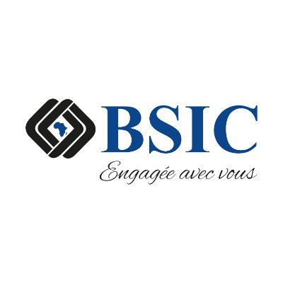
BSIC TOGO S.A. · Lomé>18GAB supervisés>95 %Disponibilité depuis mai 2025GLPI + SOPRATraçabilité des incidents
- Assurer le support applicatif N1/N2 d’un écosystème bancaire centré sur Amplitude : Core Banking, Signature, reporting, Pro Extractor, 2c Designer et intégration des virements salaires.
- Diagnostiquer les incidents de production liés aux traitements EOD/Cut-Off, aux bases Oracle 12c, aux serveurs Red Hat, aux contrôles SQL et aux anomalies transactionnelles.
- Superviser les canaux digitaux et services clients : SMS/Mobile Banking, Internet Banking, plateforme digitale, e-Relevé et messagerie Exchange.
- Surveiller plus de 18 GAB NCR/Wincor via ATM VIEW, qualifier les alertes monétiques et les incidents LAN/VPN, avec une disponibilité supérieure à 95 % depuis mai 2025.
- Contribuer au support des interfaces critiques SWIFT, RTGS/BCEAO, KYC/Compliance, filtrage des transactions et services de transfert, avec escalade vers les équipes concernées.
- Tracer les incidents dans GLPI et SOPRA, documenter les RCA, procédures de reprise, points de contrôle et indicateurs SLA/KPI pour renforcer la continuité de service.
03
Mars 2025 — Mai 2025SupervisionMission clôturée en mai 2025
Superviseur technique
HOMINTEC TOGO · Lomé
3 sitesPéages nationauxCEI 61439-2Armoires électriquesTGMS + FPGASystèmes automatisés
- Piloter la continuité électrique sur trois sites nationaux de péage grâce à l’installation d’armoires électriques conformes à la norme CEI 61439-2.
- Assurer le monitoring des systèmes automatisés TGMS Admin et FPGA et contrôler leur disponibilité opérationnelle.
- Gérer la vidéosurveillance ; sur la période de mars à mai 2025, aucun incident opérationnel majeur n’a été signalé sur le périmètre suivi après la mise en service.
- Suivre les alarmes, coordonner les interventions techniques et produire les comptes rendus de continuité.
04
Avril 2020 — Décembre 2024Support IT
Technicien Senior — Exploitation & Service Desk
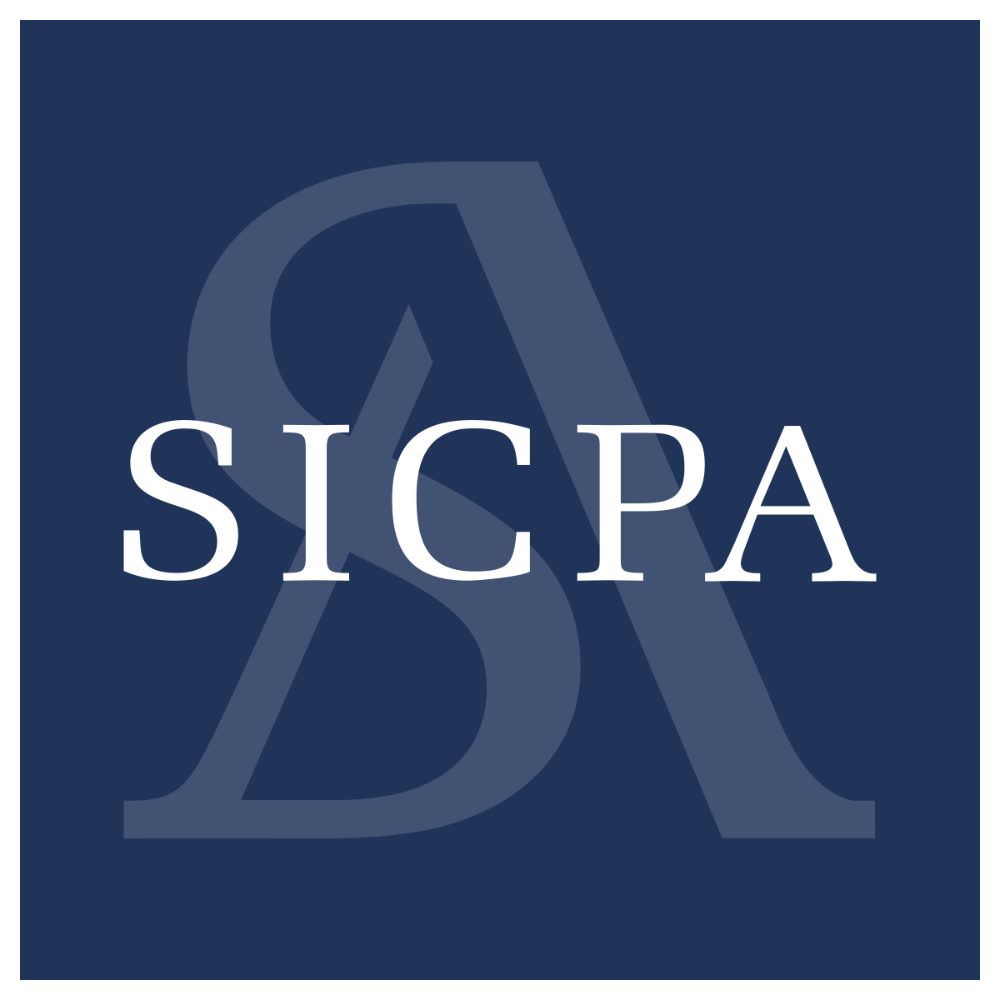
SICPA TOGO · Lomé200+ · 99,9 %Supervision · disponibilité100+ · 95 %Tickets ServiceNow · SLA−30 %Incidents récurrents
- Superviser plus de 200 équipements industriels et analyser les logs dans Splunk, contribuant au maintien d’une disponibilité de 99,9 % sur le périmètre suivi.
- Gérer plus de 100 tickets d’incident dans ServiceNow, de la qualification à la clôture, avec 95 % de respect des SLA.
- Conduire les RCA et actions correctives, contribuant à une réduction de 30 % des incidents récurrents, puis enrichir la documentation et la base de connaissances.
- Assurer le support technique N1/N2 multi-sites des utilisateurs, applications, postes Windows, équipements connectés et périphériques.
- Déployer et paramétrer les solutions de marquage numérique sur 10 sites industriels afin d’assurer la traçabilité opérationnelle des produits.
- Réaliser plus de 100 interventions préventives et correctives sur imprimantes industrielles, capteurs et réseaux électriques, contribuant à réduire les temps d’arrêt de 20 %.
- Mettre en place et suivre les procédures PRM/OPM de 25 équipements critiques pour structurer les maintenances et leur traçabilité.
- Coordonner six techniciens sur le terrain et former les collaborateurs, avec un taux de satisfaction client de 95 %.
05
Avril 2019 — Mars 2020Support ITStage et service regroupés · Sur site
Technicien Support Informatique & Réseaux
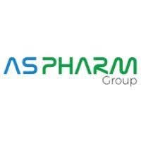
AS PHARM GROUP · Togo5Établissements accompagnés+30 %Efficacité opérationnelle−15 %Incidents de sécurité
- Déployer, paramétrer et assurer le support de progiciels dans cinq établissements pharmaceutiques, avec une amélioration de 30 % de l’efficacité opérationnelle.
- Assurer le support utilisateurs N1/N2 et former le personnel des officines à l’utilisation des applications, postes et équipements.
- Installer les correctifs logiciels, exécuter les scripts de maintenance, tester la connectivité réseau et traiter les alertes de performance.
- Mettre en œuvre les protocoles de sécurisation des données ayant contribué à réduire de 15 % les incidents de sécurité.
- Qualifier et documenter les incidents, enrichir la base de connaissances et escalader les anomalies vers les équipes compétentes.
06
Février — Juillet 2019Support IT
Chef de projet IT — Parc & Helpdesk
ESSN Groupe · Lomé / Cotonou
7 + 2 sitesImpression · câblage500+Documents archivés200Équipements inventoriés
- Déployer des solutions d’impression multifonctions sur sept sites, contribuant à diminuer les coûts d’impression de 20 %.
- Concevoir et mettre en œuvre le câblage structuré de deux sites majeurs afin d’assurer une connectivité fiable.
- Installer un système d’archivage numérique pour plus de 500 documents, facilitant leur consultation et leur disponibilité.
- Coordonner l’inventaire et la documentation de 200 équipements, contribuant à améliorer la gestion des ressources et à réduire les pertes de 10 %.
- Mettre en place une cellule Helpdesk, tracer les demandes et contribuer à réduire de 35 % le temps de résolution des incidents.
07
Février 2016 — Mai 2017Technique & commercial
Technico-commercial en informatique & maintenance
TICNET · Lomé
50Postes et serveurs50Utilisateurs ZimbraWindows ServerAdministration du parc
- Administrer et maintenir un parc de 50 postes et serveurs sous Windows Server ; gérer la messagerie Zimbra et le support associé pour 50 utilisateurs.
- Installer, configurer et déployer les équipements réseau et les outils de communication ; accompagner les utilisateurs et organiser les formations de prise en main.
- Assurer le suivi des stocks et la disponibilité des équipements destinés aux déploiements et aux opérations de maintenance.
- Identifier les besoins techniques des prospects, présenter les solutions informatiques et réaliser les démonstrations produit.
- Rédiger les propositions commerciales, conduire les négociations et contribuer à la fidélisation des clients par un suivi technique et commercial.
Stages techniques & autres expériencesParcours antérieur et stages présentés séparément des postes occupés+
Expériences complémentaires
Ces missions et stages complètent le parcours professionnel présenté dans la chronologie principale.
Opérateur de saisie
Commission Électorale Nationale Indépendante
- Moderniser une base de données électorale regroupant un million d’électeurs.
- Superviser la production et la distribution de 500 000 cartes électorales.
- Réaliser les opérations de saisie avec un taux d’erreur inférieur à 1 %, garantissant l’intégrité des informations.
- Organiser l’archivage sécurisé des dossiers sensibles conformément aux exigences de confidentialité.
- Mettre en place des procédures automatisées ayant contribué à réduire de 20 % les délais de traitement.
Stages techniques
Chaque stage est présenté comme une expérience distincte, avec son environnement, ses équipements et les apprentissages techniques acquis.
Stage — Génie mécanique & productique
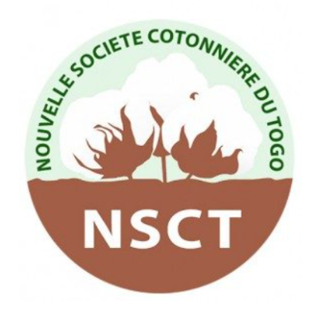
NSCT — Nouvelle Société Cotonnière du Togo- Optimiser les opérations de maintenance du condenseur, réduisant les pannes de 15 %.
- Intervenir sur l’égreneuse, le nettoyeur de fibre et le nettoyeur incliné afin de soutenir la continuité de production.
- Réaliser des interventions sur le câblage des systèmes de contrôle, améliorant la fiabilité des installations de 10 %.
- Contribuer à la rédaction de procédures standardisées pour renforcer la traçabilité des interventions.
- Assister les équipes de terrain dans le respect des règles HSE et des exigences d’intervention sur site.
Stage de formation — Maintenance IT & Réseaux
BRAIN FACTORY SARL
- Participer au maintien en condition opérationnelle du parc informatique et du réseau, avec un objectif de disponibilité de 99 %.
- Installer et paramétrer 10 routeurs ; effectuer les tests de connectivité et les contrôles de configuration pour améliorer la performance et la sécurité du réseau.
- Déployer et configurer des antennes Nano 5 pour des accès Wi-Fi dans les espaces publics et à domicile à Adidogomé, Djagblé et Adétikopé ; contrôler la couverture et la connectivité après installation.
- Diagnostiquer les incidents matériels et réseau et contribuer à réduire de 25 % leur temps de résolution.
- Centraliser les demandes de service après-vente (SAV), suivre les interventions et consigner les diagnostics et solutions dans les rapports techniques.
- Proposer des optimisations de configuration et des actions de maintenance préventive pour fiabiliser les installations.
Stage — Solaire, réseaux & vidéosurveillance
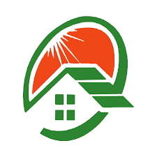
BAHAAU Technologies Consulting- Participer à l’installation de panneaux solaires et de systèmes de surveillance sur site.
- Installer 30 caméras de vidéosurveillance afin d’assurer une couverture de sécurité complète.
- Réaliser des tests de connexion et des réglages réseau, améliorant la stabilité et la performance de 20 %.
- Mettre en œuvre des actions correctives réduisant de 15 % les interruptions de service.
- Monter des circuits électroniques pour des applications domotiques et assister les déploiements jusqu’à leur conformité.
03 · Compétences IT & NOC / SOC
NOC opérationnel.
Socle IT étendu.
Sept domaines complémentaires : supervision NOC, systèmes, réseaux, support, applications, sécurité et automatisation. Les compétences SOC en formation et le scripting de base sont identifiés explicitement.
CentreonSplunkATM VIEWMonitoring & alertingAnalyse de logsIncidents N1/N2 & escaladesRCAKPI & disponibilitéSLAITIL en environnement NOCCoordination terrain / cœur de réseau / fournisseurs
Windows 10/11Windows Server 2012/2016/2019Linux — installation, configuration, maintenanceActive Directory — comptes & droits d’accèsGPO & partages réseauBackup & recoveryVMware WorkstationVirtualBoxProxmox
TCP/IPDNS / DHCPVLAN / VPNFirewall / ACLCisco / MikroTik — configuration de baseSwitches & routeursWi-Fi entrepriseAntennes Nano 5Brassage & câblage RJ45Ping / traceroute / WiresharkTélécoms 4G / 5GDatacenter — UPS / PDUÉnergie & climatisation
Support utilisateurs N1/N2GLPI — incidents & bonnes pratiques ITILServiceNow / SOPRAGLPI / OCS Inventory — gestion de parcClonezilla / WDS / MDT — déploiement & clonageHardware — RAM, HDD/SSD & diagnosticRemote Desktop / TeamViewer / AnyDeskSuivi SAV
ERPNext — utilisateurs & paramétrage fonctionnelSupport applicatifMySQL — administration & sauvegardeSQLMicrosoft 365 / OutlookExchange OnlineZimbraAmplitude — Core BankingOracle 12c — diagnostic applicatif
Gestion des accès utilisateursAntivirus & sécurité endpointSurveillance proactiveContinuité de serviceCompTIA Security+Sécurité réseau & gestion des risquesDétection des menaces — fondamentauxConcepts SIEMFTTH / FTTx / GPON — montée en compétence
Python — automatisation de baseScripts de maintenanceRédaction de procédures techniquesBase de connaissancesRapports d’intervention & reportingPower BIFormation & accompagnement utilisateurs
04 · Projets & laboratoire technique
Superviser, diagnostiquer
et fiabiliser.
Supervision & disponibilité industrielle
Périmètre
Plus de 200 équipements industriels suivis dans un environnement multi-sites critique.
NOC mobilisé
Monitoring, analyse de logs Splunk, RCA, escalade et maintenance proactive.
Impact
Contribution à 99,9 % de disponibilité et à une réduction de 30 % des incidents récurrents.
NOCSplunkMonitoringRCA
SICPA TOGODéploiement de SICPATRACE TOGO
Contexte
Système automatisé de traçabilité et de marquage numérique des produits agroalimentaires.
Mon rôle
Déploiement et paramétrage de la solution sur 10 sites industriels, puis maintenance des imprimantes, capteurs et connexions associées.
Résultat
Un socle de traçabilité multi-sites documenté par l’Office Togolais des Recettes.
AutomatisationTraçabilitéMulti-sites
SICPA TOGOPrésentation officielle OTR ↗Fiabilisation du Service Desk
Mon rôle
Prise en charge des incidents de la qualification à la clôture dans ServiceNow, avec communication aux utilisateurs et escalade si nécessaire.
Méthode
Diagnostic, analyse des logs, documentation, RCA et suivi des SLA.
Impact
Plus de 100 tickets suivis avec 95 % de respect des SLA sur le périmètre confié.
ITSMServiceNowSupport N1/N2
SICPA TOGOContinuité du parc GAB
Périmètre
Plus de 18 GAB NCR/Wincor supervisés depuis la prise de fonction en mai 2025.
NOC mobilisé
Surveillance ATM VIEW, diagnostic, traçabilité des incidents et coordination des prestataires.
Impact
Contribution au maintien d’une disponibilité supérieure à 95 % depuis mai 2025.
NOCATM VIEWSupervisionDisponibilité
BSIC TOGOSolution IoT de gestion de flotte
Mon rôle
Intégration de capteurs Zigbee et GPS pour le suivi des véhicules.
Usage
Remontée des positions et informations utiles en temps réel.
Résultat
Amélioration du suivi logistique et de la sécurité des engins roulants.
IoTZigbeeGPSTemps réel
TICNET06 · LAB PERSONNEL
Sauvegarde, restauration & résilience avec Veeam
Contexte
Maquette virtualisée et isolée dédiée à l’apprentissage de Veeam Backup & Replication, sans donnée de production.
Architecture
Workloads Windows Server, Linux, fichiers et base SQL de test ; orchestration Veeam, proxy, dépôt principal, dépôt Linux immuable et copie hors site simulée.
Scénarios
Sauvegardes complète et incrémentale, suppression de fichier, indisponibilité de VM, restauration granulaire, récupération de VM et vérification applicative.
Pilotage
Étude de la règle 3-2-1-1-0, du RPO/RTO, de l’intégrité, de la capacité des dépôts et de la traçabilité des tests de restauration.
VeeamBackup & ReplicationWindows ServerLinuxVirtualisationRPO / RTOPRA / PCAImmutabilité
Démarche personnelle de montée en compétenceGestion d’incidents IT : SQL, Spring Boot & Docker
Comment une demande devient-elle un incident enregistré, puis une donnée utile à la supervision ? Ce parcours relie trois schémas autour d’un même exemple : suivre les incidents des services DNS, VPN et API. Chaque visuel est accompagné d’une description et d’un commentaire progressif pour comprendre les données, l’application et son environnement.
Support d’étude personnel · Cas fictif · Visuels de niveau intermédiaire expliqués dès les bases, dans le prolongement des formations Orange Digital Center. Les extraits illustrent une architecture ; une application complète n’est pas fournie.
SQL · LEFT JOINAPI RESTJava & Spring BootSpring Data JPAPostgreSQLDocker Compose
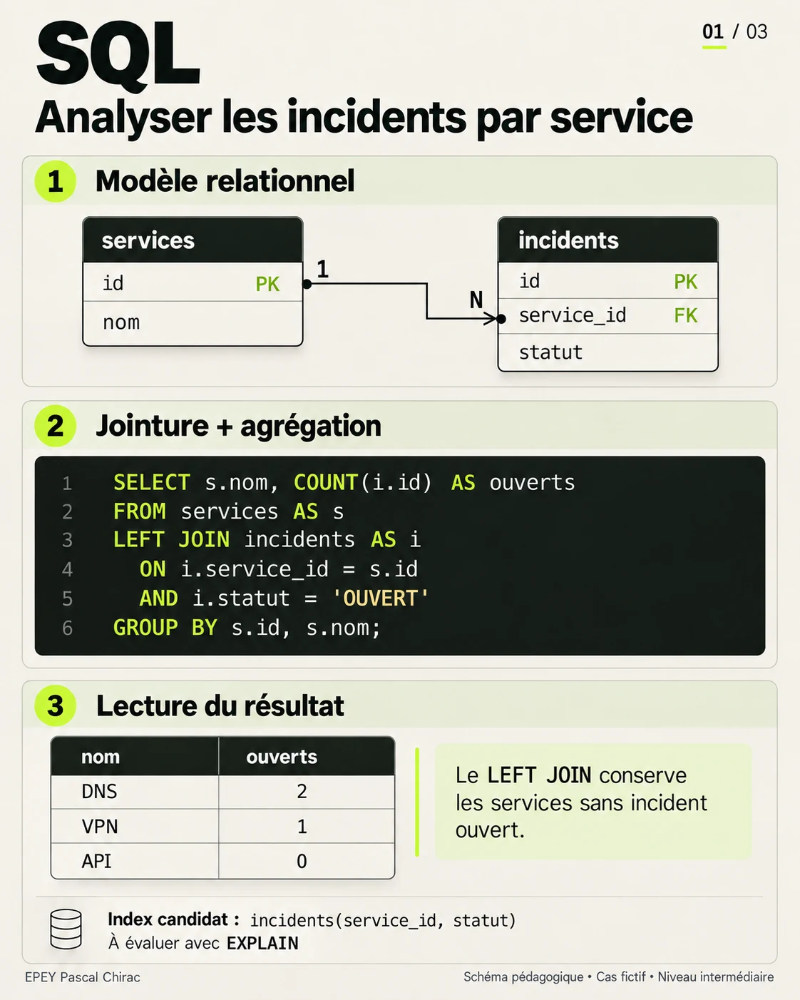
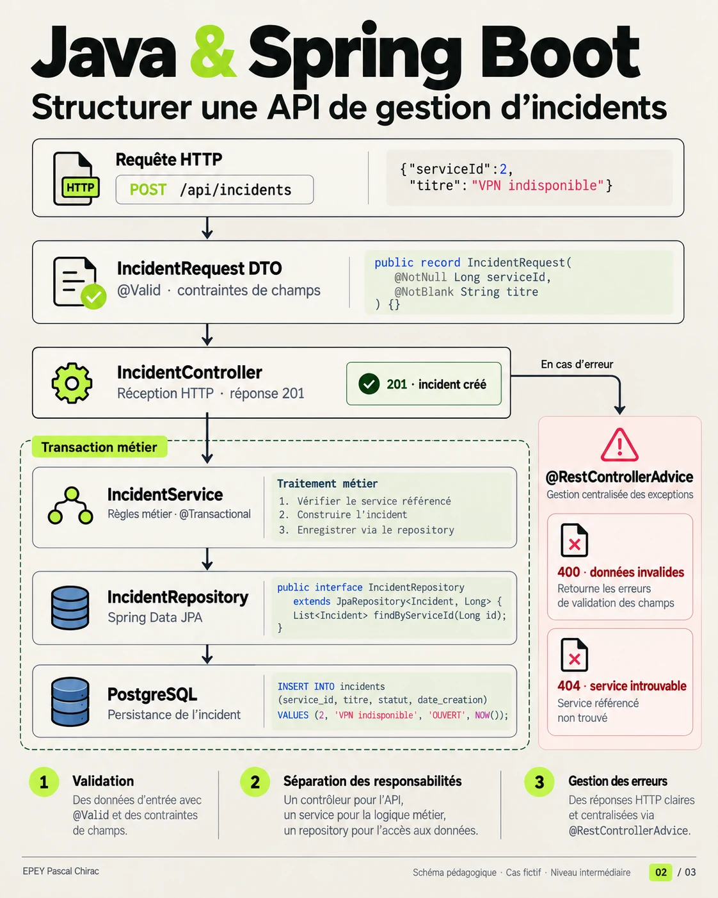
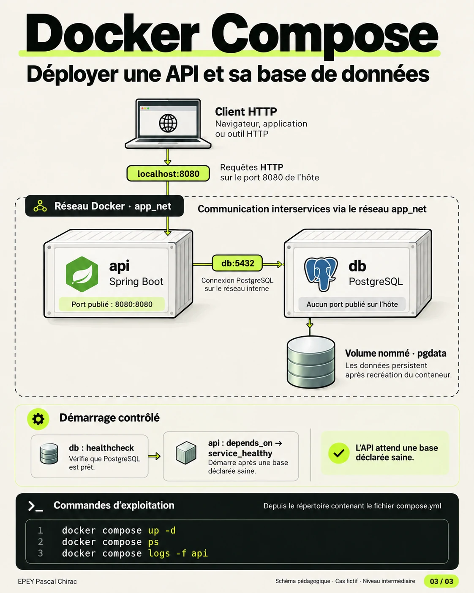
05 · Certifications vérifiées
Des compétences
vérifiables.
Certification CompTIA Security+, badges numériques vérifiables, sensibilisation à la sécurité et formations Orange Digital Center. Ce socle consolide mon positionnement NOC/SOC : support IT, diagnostic, systèmes, réseaux, sécurité opérationnelle, gestion des risques et réponse aux incidents.
Certification principaleCybersécurité · Sécurité réseau · SOC L1
Security+Certified
CompTIA · 22 août 2026 · expire le 22 août 2029
CompTIA Security+ ce
SY0-701Sécurité réseauGestion des risquesIAMIncident Response
Vérifier le certificat ↗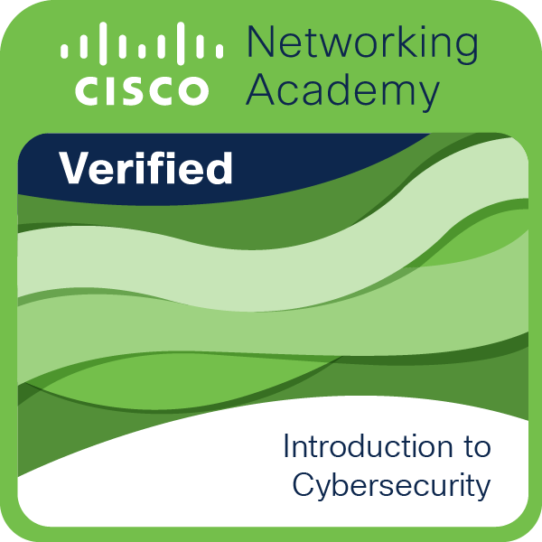
Cisco · 13 février 2026
Introduction to Cybersecurity
CybersécuritéVulnérabilités réseauDétection des menacesConfidentialité
Vérifier le badge ↗Sensibilisation récenteSécurité des utilisateurs · Culture sécurité
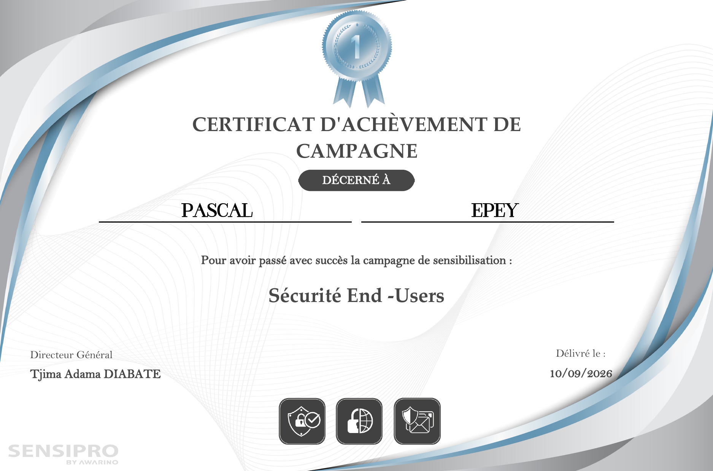
SENSIPRO by WAKING · 10 septembre 2026
Sécurité End-Users
SensibilisationSécurité des utilisateursBonnes pratiquesCulture sécurité
Consulter le certificat ↗Formations Orange Digital CenterCertificats de participation · Octobre 2026
Trois formations suivies dans le cadre de One Week Skill : bases de données relationnelles, développement Java et initiation à Docker. Les documents ci-dessous attestent de la participation aux sessions.
Orange Digital Center · 7 octobre 2026
Gestion des bases de données relationnelles avec SQL
SQLBases relationnelles
Consulter l’attestation ↗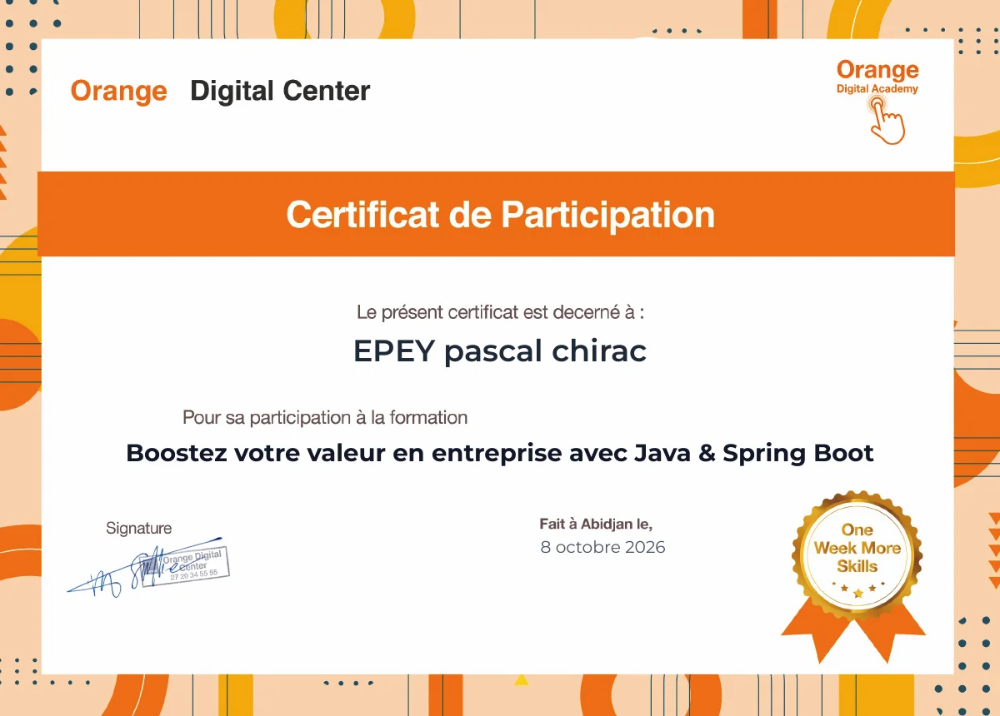
Orange Digital Center · 8 octobre 2026
Boostez votre valeur en entreprise avec Java & Spring Boot
JavaSpring Boot
Consulter l’attestation ↗Orange Digital Center · 9 octobre 2026
Débutez votre parcours DevOps avec Docker
DockerInitiation DevOps
Consulter l’attestation ↗Priorité métierSupport IT · Systèmes · Réseaux
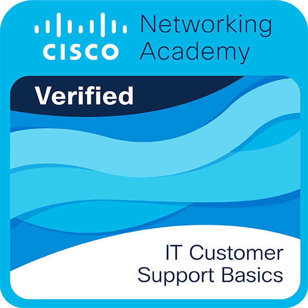
Cisco · 17 février 2026
IT Customer Support Basics
Help DeskSupport clientDépannage à distanceDocumentation
Vérifier le badge ↗
Cisco · 16 mai 2026
IT Essentials
Matériel informatiqueSystèmesRéseauxDiagnostic
Vérifier le badge ↗
Cisco · 13 août 2026
Networking Basics
IPv4Protocoles réseauSupports réseauWi-Fi
Vérifier le badge ↗Afficher les compétences complémentaires en IA
Compétences complémentairesIA · ATS · Analyse de données
Formation académique
Master en Sciences informatiques — spécialité Sécurité informatique — en coursLUCAS University College · 2024—2026Formation orientée vers les systèmes informatiques et leur sécurité.
Licence en Génie électromécaniqueUST-Togo · 2016—2018Domaines de formation : électrotechnique, réseaux informatiques et mécanique industrielle.
DUT en Génie mécanique et productiqueUST-Togo · 2014—2016Formation technique en mécanique industrielle et productique.
Baccalauréat scientifiqueLycée Moderne d’Adidogomé 1 · 2013
Autres formations
CompTIA Security+ ce — SY0-701Certifié le 22 août 2026 · expiration le 22 août 2029 · Vérification officielle CompTIA ↗
PCI-DSS — Introduction2025
Risques opérationnels bancaires2025
Service Excellence for Agents — SICPA Group2021
Maintenance informatique, câblage réseau, vidéosurveillance, solaire & électronique appliquée — BAHAAU-Service2014
Formation informatique — Spéciales Vacances Utiles · CIB-INTA23 juillet–10 août 2012 · Windows XP, Word, Excel, PowerPoint 2007 et Internet
Engagements & intérêts
Au-delà de
la technique.
Association Destin Nouveau
Bénévole au sein d’ADN TOGO, avec une contribution à des projets d’éducation, de santé et d’intégration sociale.
Créativité, énergie & sport
Mixage vidéoVoyagesÉnergies renouvelablesInfographieFootballBasketballTennis